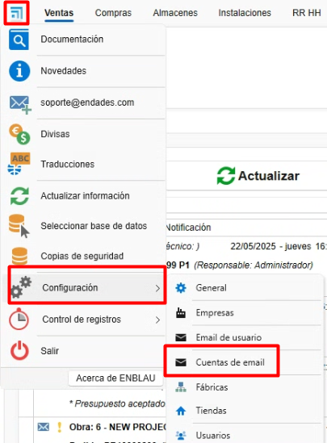

Configuração inicial do ENBLAU
1. Propósito
Este manual foi elaborado para orientar os novos usuários na configuração inicial do ENBLAU. Esta configuração inclui tudo o que é necessário para que o cliente possa realizar vendas, compras e emissão de faturas.
2. Configuração geral

2.1. Configuração de conexão com Logikal
-
Para conectar com a fábrica e os projetos do Logikal, é necessário indicar o caminho de instalação e a DLL do Logikal (unidade de rede onde o Logikal aponta).
-
No menu Geral, acesse Logikal - Conexão e Projetos.

- Para conectar à fábrica no Logikal, vá até a parte inferior da janela principal do ENBLAU, clique com o botão direito em Conexão fábrica e selecione Conectar.

2.2. Geral
- Caminho de armazenamento: Indicar o caminho onde os documentos do ENBLAU e do Logikal serão salvos (unidade de rede). Exemplo:

Nota: Recomenda-se utilizar uma unidade de rede. Caso não exista, crie-a.
- Informações da empresa: Preencher os campos necessários com as informações da empresa, como nome, CNPJ, endereço, logotipos, etc.

2.3. Textos em vendas
- Adicione textos para documentos de vendas, como observações, condições, etc.

Exemplo de relatório de pedido:

3. Gestão de usuários
- Para cadastrar novos usuários, acesse Usuários.

- Em Novo, você pode criar novos usuários.

- Uma janela será aberta para configurar as informações do usuário (nome, endereço, email, telefone, etc.), o tipo de usuário (Técnico, Comercial, Oficina, etc. É possível atribuir mais de um tipo) e as permissões. As permissões só podem ser atribuídas por usuários do tipo administrador.

- Uma vez cadastrado, o usuário poderá ser editado a qualquer momento.
4. Configuração de contas de email
- Para configurar a conta de email do usuário, acesse Email usuário:


- Para configurar as contas de email de cada usuário, acesse Contas de email:


- Em cada seção, você pode configurar o email, nome de usuário, assinatura e servidores de entrada e saída (IMAP e SMTP). A configuração do servidor de entrada/saída e das portas deve estar corretamente definida de acordo com o provedor utilizado. Dessa forma, será possível enviar e receber emails a partir de relatórios ou notificações conforme a configuração.
4.1. Configuração geral de emails
- No menu Geral - Emails, você tem a opção de definir cópias, assunto e modo de envio de emails por padrão.

4.2. Possíveis erros de autenticação Microsoft
- Ao tentar enviar um email, podemos nos deparar com este tipo de erro.

LOG
Erro: 535: 5.7.139 Authentication unsuccessful, SmtpClientAuthentication is disabled for the Tenant. Visit Envio SMTP autenticado no Exchange Online para mais informações.
O erro é de autenticação com a conta de email. Isso pode ocorrer devido a uma mudança no protocolo de segurança do Microsoft 365.
-
Solução: Contate a pessoa responsável com permissões no centro de administração do Microsoft 365. É necessário seguir os passos do link acima para configurar a conta do Outlook para que você possa sincronizar os emails em outro aplicativo.

Certifique-se de que todas as caixas estejam marcadas na seção de gerenciamento de aplicativos de email do Microsoft 365.

Nota: Para emails do Microsoft Exchange, recomenda-se que em Modo de envio de emails na seção Geral, a opção Modo de envio 2 esteja selecionada.

5. Gestão de empresas
- Caso haja várias empresas, você pode criá-las na seção Empresas, em Adicionar. Em seguida, preencha as informações em Geral e Textos em Vendas conforme necessário para cada empresa.


⚠️ Importante! Se nenhuma outra empresa for indicada, os projetos utilizarão por padrão a empresa adicionada anteriormente na configuração básica de Geral. Caso vá emitir faturas com facturae, é necessário que as informações da empresa estejam na seção Empresas.
6. Configuração de projetos
- Na seção Vendas, selecione Projetos e acesse Configuração.


- Na configuração, você terá um menu suspenso com uma lista para configurar. Para uma configuração inicial, é necessário configurar Estados e Diretórios Padrão.

6.1. Estados
- Ao selecionar Estados, abrirá uma janela para definir os estados dos projetos (obras).

6.2. Diretórios padrão
- Ao selecionar Diretórios Padrão, abrirá uma janela para definir os diretórios necessários na pasta do projeto (obra).

Nota: Os diretórios padrão são pastas que podem ser configuradas para serem geradas automaticamente com cada projeto.
7. Configuração de vendas
- Na seção Vendas, selecione Documentos de Vendas e acesse Configuração.


- Na configuração, você terá um menu suspenso com uma lista para configurar. Para uma configuração inicial, é necessário configurar Numerações, Formas de Pagamento, Bancos, Modos de Pagamento, Conceitos de Quebras, Classificações, Sujeitos Passivos (IVA) e Diretórios Padrão.

7.1. Numerações
- Ao selecionar Numerações, abrirá uma janela para definir os tipos de numeração para documentos de vendas, atribuindo números sequenciais aos documentos.

- Exemplo: Tipo de documento "Orçamento", prefixo (Alpha) e número (próximo número) - PR1000272.

7.2. Formas de pagamento
- Ao selecionar Formas de Pagamento, abrirá uma janela para definir as formas de pagamento necessárias para gerar vencimentos nas faturas.

- Exemplo: Indicar em quantas parcelas e a porcentagem que o cliente deve pagar em cada vencimento.

7.3. Bancos
- Ao selecionar Bancos, abrirá uma janela para indicar as informações do banco. O nome e um código.

7.4. Modos de pagamento
- Ao selecionar Modos de Pagamento, abrirá uma janela para definir os diferentes modos nos quais o pagamento de um vencimento pode ser realizado.

7.5. Conceitos de quebras
- Ao selecionar Conceitos de Quebras, abrirá uma janela onde você poderá adicionar os diferentes conceitos que serão usados ao registrar uma quebra (por exemplo: “defeito de fabricação”, “quebra no transporte”, etc.)

7.6. Classificações
- Ao selecionar Classificações, abrirá uma janela para definir as classificações de orçamentos.

A classificação tem o objetivo de agrupar e filtrar os documentos na lista de Documentos de venda.
7.7. Sujeitos passivos (IVA)
- Ao selecionar Sujeitos Passivos (IVA), abrirá uma janela para definir os tipos de sujeitos passivos.

7.8. Diretórios padrão
- Ao selecionar Diretórios Padrão, abrirá uma janela para definir os diretórios necessários na pasta de documentação.

Nota: Os diretórios padrão são pastas que podem ser configuradas para serem geradas automaticamente com cada documentação.
8. Configuração de compras
- Na seção Compras, selecione Documentos de Compras e acesse Configuração.


- Na configuração, você terá um menu suspenso com uma lista para configurar. Para uma configuração inicial, é necessário configurar Numerações, Formas de Pagamento, Classificações e Diretórios Padrão.

8.1. Numerações
- Ao selecionar Numerações, abrirá uma janela para definir os tipos de numeração para documentos de compra, atribuindo números sequenciais aos documentos.

- Exemplo: Tipo de documento "Pedido", prefixo (Alpha) e número (próximo número) - PE70000082.

8.2. Formas de pagamento
- Ao selecionar Formas de Pagamento, abrirá uma janela para definir as formas de pagamento necessárias para gerar vencimentos nas faturas. Você verá que é a mesma janela configurada na seção de Documentos de venda.

8.3. Classificações
-
Ao selecionar Classificações, abrirá uma janela para definir as classificações de compras. Aqui você pode definir os tipos de classificação: • Quebras
• Materiais adicionais
• Pedido ordinário (padrão, quando um pedido não corresponde aos anteriores)
Esta configuração é importante para que os dados sejam refletidos corretamente ao realizar um estudo de custos do projeto.
8.4. Diretórios padrão
- Ao selecionar Diretórios Padrão, abrirá uma janela para definir os diretórios necessários na pasta de documentação.

Nota: Os diretórios padrão são pastas que podem ser configuradas para serem geradas automaticamente com cada documentação.
9. Gestão de notificações
O ENBLAU permite configurar notificações automáticas associadas a diferentes processos do sistema. Essas notificações podem melhorar a rastreabilidade e a comunicação interna.
9.1. Quando as notificações são geradas?
As notificações podem ser ativadas em eventos como:
- Pagamento da primeira fatura.
- Envio de uma produção para a fila de produção.
- Outros processos definidos pelo fluxo de trabalho.
9.2. Configuração de notificações
Essas notificações são totalmente configuráveis na seção Notificações e processos:
- Podem ser direcionadas a um papel específico (ex.: Comercial, Técnico, Produção) ou a uma pessoa concreta.
- Podem ser associadas automaticamente a usuários vinculados a projetos específicos.


9.3. Onde as notificações são recebidas?
As notificações podem ser recebidas através de diferentes canais:
- Janela inicial do ENBLAU
- Aplicativo móvel enSITE
- Email, se a opção correspondente estiver ativada
⚠️ Em alguns casos, pode não ser conveniente recebê-las por email, sendo possível optar por exibi-las apenas dentro do ENBLAU ou no enSITE.

9.4. Envio por email
Para que as notificações cheguem ao email do usuário, a caixa correspondente deve estar marcada em seu perfil:

Nota:
As notificações são geradas de acordo com os processos executados pelos usuários dentro do sistema.
10. Conclusão
Seguindo este manual, você poderá realizar uma configuração inicial do ENBLAU para a criação de documentos de compras e vendas.
 Español
Español
 English
English
 Italiano
Italiano
 Português
Português